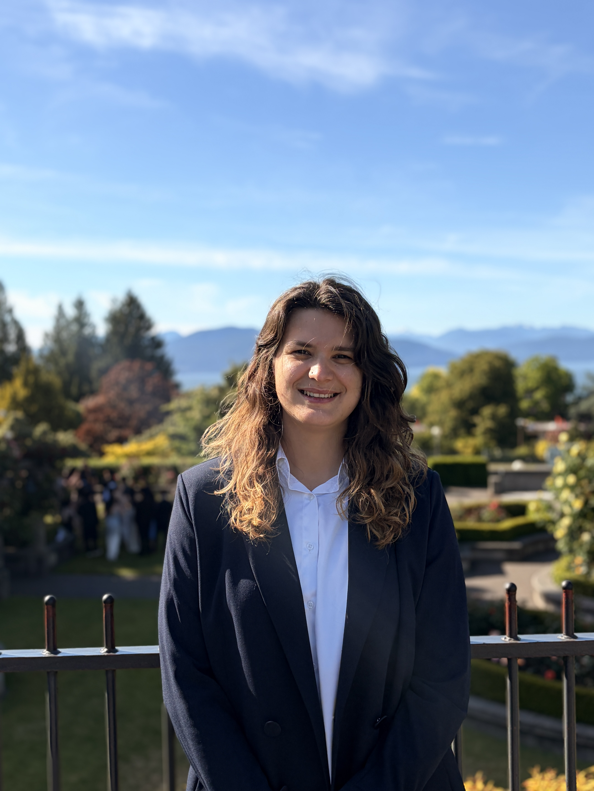

Maya Caon
PhD Student
Health and Exercise Science · Concordia University
Maya Caon is a PhD student in Health and Exercise Science at Concordia University under the supervision of Dr. Silva. Her research focuses on the relationships between physical activity, cardiometabolic health, and brain aging, with a particular interest in understanding how exercise can support cognitive health and reduce the risk of age-related neurodegenerative diseases, including Alzheimer's disease. She completed her BSc in Applied Sport and Exercise Science and MSc in Kinesiology and Human Performance at Barry University, where she competed as a collegiate soccer player while pursuing her academic and research training; her previous research experience spans exercise physiology, biomechanics, sport psychology, and human performance, and she has presented her work at national and international scientific conferences. Outside the lab, Maya enjoys traveling, staying active, cooking, and spending time with family and friends.